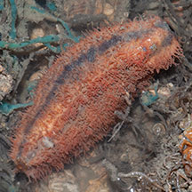
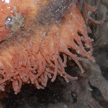
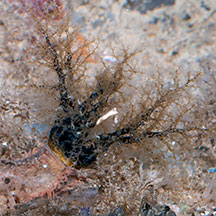
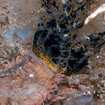
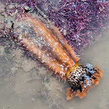
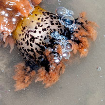
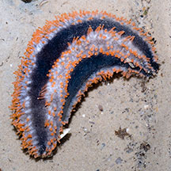
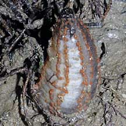
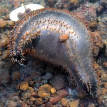
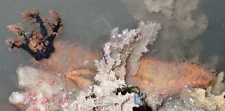

|
|
| sea cucumbers text index | photo index |
| Phylum Echinodermata > Class Holothuroidea |
| Orange
sea cucumber Mensamaria intercedens* Family Cucumariidae updated Apr 2020 Where seen? This orangey sea cucumber is sometimes seen on our Northern shores, usually attached to coral rubble, often near sponges, sometimes partially covered by sediments, nestled up among hydroids, draped with synaptid sea cucumbers or smaller sea cucumbers. In Australia, they are found on intertidal shores in 'U-shaped' burrows or entwined in rhizomes of seagrasses. Features: 8-12cm long. Body spindle-shaped (pointed at both ends) somewhat squarish or quadrangular in cross-section. Doesn't have a clear upper and underside. Tube feet orange, long and thin, appearing from orange rows along the body length. Actually, the body is dark blue with orange tube feet and orange stripes along its length. But sometimes the orange stripes are wide so that the animal appears mostly orange with fainter dark blue stripes. The feeding tentacles all white or white at the base, black towards the tips, black speckled in between; branched tips pinkish or pale orange. |
|
 Body squarish in cross section.  Tube feet long thin orange. Changi, May 08 |
 Feeding tentacles extended.  Marina Keppel Bay, Oct 09 |
 Feeding tentacles not fully extended.  Changi, Jul 10 |
 Dark blue body with orange tube feet. Changi, Jul 10 |
 Half buried. Changi, Jul 10 |
 Bloated. Beting Bronok, May 03 |
 Feeding tentacles extended. Changi Loyang, May 21 |
*Species are difficult to positively identify without close examination.
On this website, they are grouped by external features for convenience of display
| Orange sea cucumbers on Singapore shores |
On wildsingapore
flickr
|
| Other sightings on Singapore shores |
Links
|